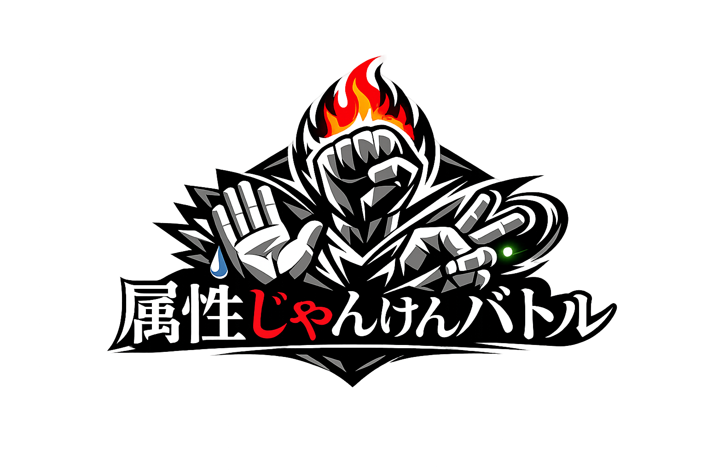

タッチしてスタート
MYメニュー
アイコン
アイコン画像
アイコン背景
ショップ
所持コイン：0
カードスキン
アイコン画像
アイコン背景
クエスト
プロフィール
ユーザー
称号
ストーリークリア状況
じゃんけん統計(CPU戦・ストーリー・オンライン合算)
じゃんけんの勝率：
オンライン対戦成績
クリアしたミッション数
獲得した属性数
オンライン対戦
ルームを作成する
ルームコードを発行し、友達に伝えて参加してもらいます。
ルームに参加する
友達から教えてもらったルームコードを入力してください。
ストーリーモード
世界は突如現れた「時空の裂け目」によって混乱に陥った。
あらゆる境線が混雑するカオスな世界ですべての世界に適応したのは,
じゃんけんただ一つだった
あなたはそんな世界でじゃんけんを極めるための旅に出かける。
これは、じゃんけんを巡る壮大な物語である。
属性を選択
ステージ選択
ステージ
ステージ確認
🎁 アイテム獲得チャンス！
獲得するアイテムカードを選択してください。
CPU戦の属性を選択
CPU戦 属性確認
あなた
対戦相手
YOU WIN